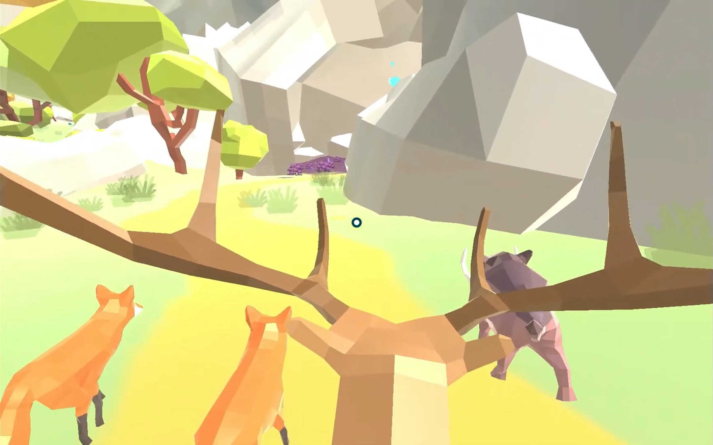

Prototype: DeAR (VR)
This project is a prototype that resulted from a collaboration between my university UU and the art university (Hogeschool van de Kunst Utrecht)
In this project I participated as a developer consultant for a group of Game Art students. Our goal was to design and develop a VR experience to be used during the treatment of burnt patients to help them with pain management. The main requirements were that the experience contained calming and relaxing qualities and that it required minimum input from the user
My role in the team was to be a tech consultant, sole programmer and project manager. The game design was a collaboration among the whole team. The rest of the team created all conceptual art, and all art assets for the project
This was my introduction to VR development. The main things I learned from the creation of this experiment tool were:
- Multidisciplinary collaboration
- Project management
- Pre-production of a game concept
- Make version control accessible for non-programmers
- Implementation of Companion AI
- Implementing splines and bezier curves from scratch